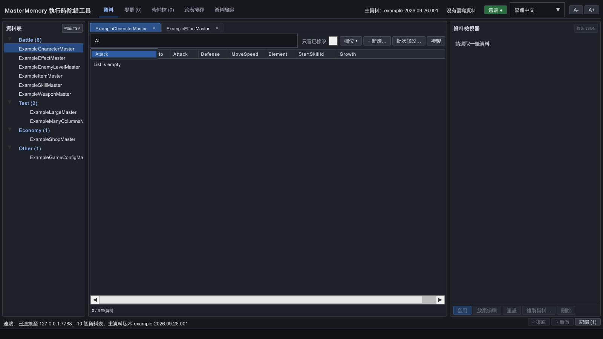
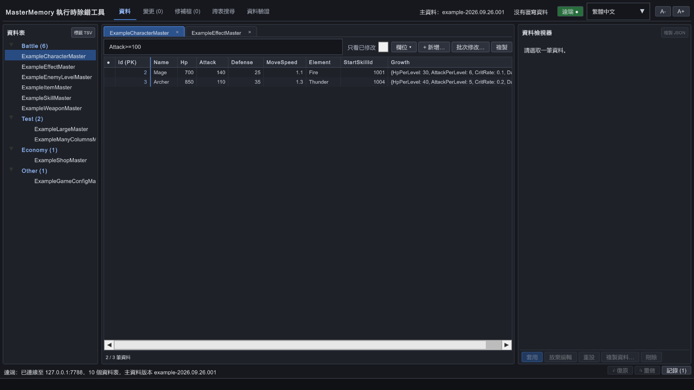
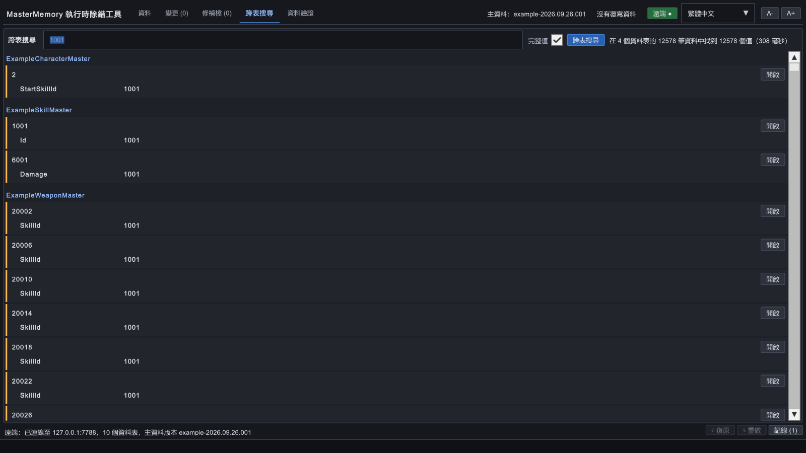

Data 搜尋框
已知道 Table，想篩出符合多個欄位條件的 Record；可接著排序、檢查 Inspector 或批次修改。
Remote Editor 有兩種搜尋：Data 頁籤對目前資料表的 Record 篩選；跨表搜尋（Find）尋找所有已註冊資料表內的值。以下用實際範例畫面逐步說明。
先在 Data 頁籤選擇 Table，再點搜尋框。輸入 At，候選清單會提示 Attack。介面可選繁體中文或日文，但欄位與查詢一律使用 Record 的程式名稱。
At。Attack>=100。若沒有開頭相符的欄位，候選會改用「包含」比對。輸入 Element=F 時，可提示列舉值 Fire；布林值會提示 true / false。查詢記錄可在空白搜尋框中顯示，或按 ↓ 找最近條件。

At → Attack點圖放大 ↗輸入條件後會自動更新結果。以 ExampleCharacterMaster 為例，Attack>=100 可從 3 筆角色中找出 2 筆。多個條件以空白分隔，必須全部成立。

Attack>=100 → 2 / 3 筆資料 點圖放大 ↗| 輸入 | 效果 |
|---|---|
ice | 主鍵、顯示名稱或字串欄位包含 ice；不分大小寫 |
Damage>100 | 數值大於 100；支援 =、!=、>、>=、<、<= |
Name~blast | 欄位文字包含 blast |
Element=Fire | 用列舉名稱比對；不分大小寫 |
IsPassive=true | 比對布林值 |
Name="Ice Blast" | 值含空白時使用雙引號 |
UnlockLevel=null | 尋找 null 欄位 |
Category=1 Damage > 100 | 兩個條件都要成立；運算子兩側可留空白 |
有 Runtime Override 時，以覆寫後的值比對。欄位名稱不分大小寫，但必須使用程式名稱。
欄位不存在或值格式錯誤時，筆數旁顯示警告並略過該條件。預設最多顯示前 500 筆符合資料。
Batch Edit 作用於所有符合條件的 Record，包含畫面未顯示的後續筆數。執行前先確認查詢條件。
點工具頂部的「跨表搜尋」（英文 Find），輸入名稱、編號或其他值，按 Enter 或「跨表搜尋」。結果依 Table 和 Record 分組，點「開啟」可跳至該筆資料。
1001。結果很多時，勾選「完整值」或輸入更長的查詢字串。Find 頁籤開啟期間若 Override 改變，結果會重新計算。

1001：找出引用的 Record 點圖放大 ↗已知道 Table，想篩出符合多個欄位條件的 Record；可接著排序、檢查 Inspector 或批次修改。
只知道某個 ID、名稱或值，想知道它出現在哪些 Table、Record、List 或巢狀欄位。